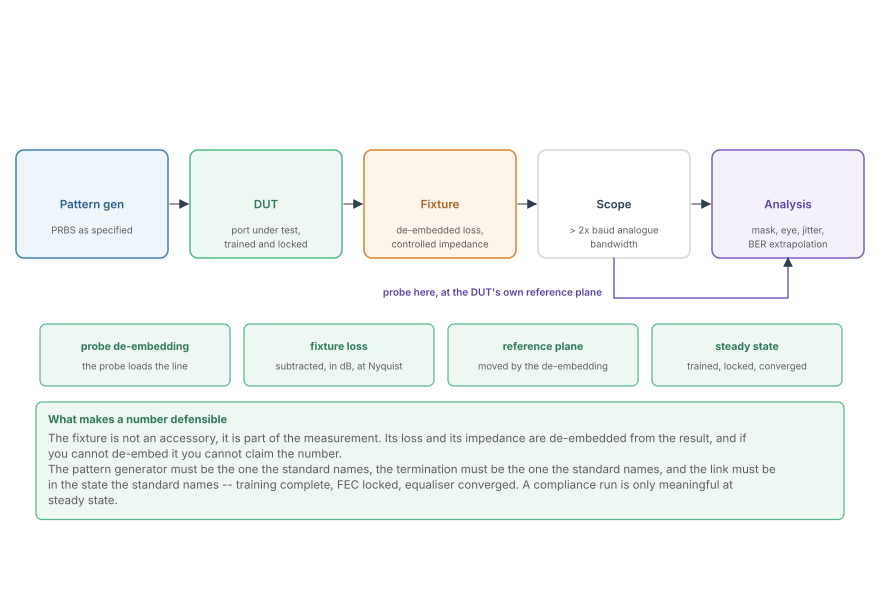
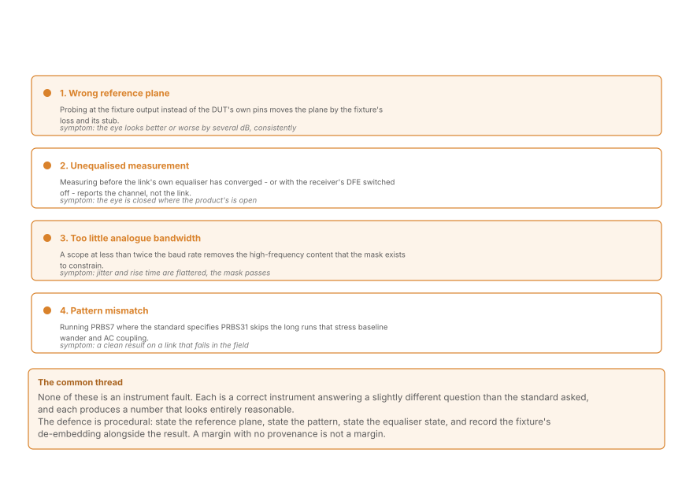
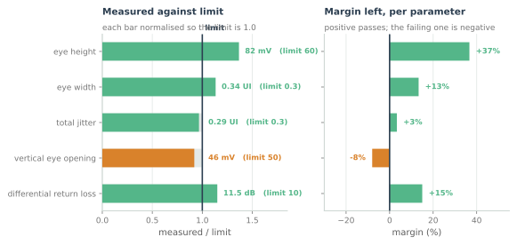

Compliance Test in Practice
A full nine-step procedure for a 1000BASE-T and 10GBASE-KR port, four ways to get a wrong answer with a correct instrument, and a symptom-to-cause table for when the eye will not open.
Everything in this part has been a measurement. This chapter is the procedure that produces them, in the order a lab actually runs it, and the four ways a correct instrument produces a wrong number. It is the least mathematical chapter in the part and the one most likely to decide whether a product ships, because a compliance number that cannot be defended is worse than no number at all.
The reason is structural. A standard specifies the port, and the port is not where you can put a probe. Everything between the port and the instrument -- a fixture, a cable, a connector, a probe -- is a measurement artefact, and every one of them has to be removed before the number means anything. That removal is de-embedding, and it is where most compliance arguments are actually won or lost.
The bench

Each block in that picture has a job and a failure mode.
- Pattern generator. Produces the pattern the standard names, at the specified amplitude and rise time. Failure mode: running a shorter or easier pattern because it finishes sooner.
- DUT. The port under test, powered, trained, and in the state the standard specifies. Failure mode: measuring before the equaliser has converged or the FEC has locked.
- Fixture. The mechanical and electrical interface. Its loss and its impedance discontinuities are part of the measurement and must be characterised. Failure mode: treating the fixture as transparent.
- Scope. Analogue bandwidth above twice the baud rate, so that the measurement is of the DUT and not of the instrument. Failure mode: a scope that filters away exactly the high-frequency content the mask constrains.
- Analysis. Mask test, eye measurements, jitter decomposition, and extrapolation to a low error ratio. Failure mode: extrapolating a non-Gaussian distribution as though it were Gaussian.
The nine steps
This is the sequence for a 1000BASE-T or 10GBASE-KR port, and the order is not arbitrary: each step assumes the one before it.
- State the reference plane and the limits. Both come from the standard, and both go on the report before any data is taken.
- Characterise the fixture. Measure its insertion loss and return loss as a function of frequency, and its group delay. This is an S-parameter measurement, and it is the DFT chapter's worked example applied to a test accessory.
- Calibrate the instrument at the plane you will probe. A scope calibration performed at the probe tip is a different calibration from one at the DUT pins. Calibrate where you measure, or de-embed to where you claim to measure.
- Confirm the link is in steady state. Trained, equaliser converged, FEC locked, and -- critically -- a record of how long you waited. A link measured during adaptation produces a number that improves if you wait, which means the number was not the link's.
- Verify the pattern and the amplitude. Read them off the instrument, do not assume them from the setup file. A pattern generator that has silently defaulted to PRBS7 will produce a beautiful, wrong eye.
- Capture with enough record. Enough unit intervals for the persistence to be meaningful, and enough resolution to see the narrowest mask feature. Both are the DFT chapter's three numbers.
- Measure, do not eyeball. Eye height and width from the histograms, jitter decomposed into random and deterministic components, and the mask test run by the software rather than by your judgement of the picture.
- Compare against the limits, in the stated units and bandwidth. A power in dBm/MHz compared against a limit in dBm/100 kHz is a 10 dB error, and it is invisible in the report.
- Record the provenance. Reference plane, fixture de-embedding, pattern, equaliser state, record length, and bits examined. A number without provenance is not a measurement; it is an opinion with units.
Step 6 deserves a figure of its own, because "enough record" is two separate requirements that are easy to conflate: enough unit intervals for the persistence to be meaningful, and enough frequency resolution to see the narrowest mask feature.

A record too short for the feature does not produce a warning. It produces a smooth, plausible, wrong number -- which is the resolution argument from the DFT chapter, arriving on the bench as a checkbox.
Four ways to be wrong

None of these is an instrument fault. Each is a correct instrument answering a slightly different question from the one the standard asked.
Wrong reference plane. Probing at the fixture output instead of the DUT pins moves the plane by the fixture's loss and its stub. On a short backplane channel with 22 dB of loss at Nyquist, a fixture that contributes 2 dB is a 9% error in the margin, consistently in one direction.
Unequalised measurement. Measuring before the receiver's own equaliser has converged, or with its DFE disabled, reports the channel rather than the link. The eye can be closed where the product's is open, and the failure is often a test-equipment configuration rather than a hardware problem.
Insufficient analogue bandwidth. A scope at less than twice the baud rate removes high-frequency content before the mask ever sees it. Rise times look slower (which is often flattering), jitter looks lower, and the mask passes. The error is systematic and always in the optimistic direction.
Pattern mismatch. PRBS7 where PRBS31 is specified skips the long runs that stress AC coupling and baseline wander. The result is a clean measurement of a link that will fail in the field.
The report is a set of margins
A compliance report does not have one number. It has a set of comparisons, and the interesting information is which ones are comfortable.

The figure is a representative 10GBASE-KR result, and its shape is the useful part. One parameter fails and four pass; of the four, one is comfortable and one is a few per cent from the line. A pass/fail summary collapses all of that into a single word and throws away the only information a designer needs.
Three habits make a report useful rather than merely true:
- Report the margin, not just the verdict. "Eye width 0.34 UI against a 0.30 UI limit" tells the next engineer where the risk is. "Pass" does not.
- Report the measurement uncertainty. Every number has one, and it comes from the fixture de-embedding, the instrument's own noise, and the record length. A 4% margin inside a 5% uncertainty is not a pass; it is a coin flip.
- Report the conditions. Temperature, supply, and settling time. A link at 25 °C with nominal supply is the best case, and the standard's limits apply across a range.
Two more practical facts are worth stating because they cost real projects time:
- A margin that is comfortable at the pin can be negative at the far end of a real cable. Compliance is measured on a specified test channel, so passing it proves the port, not the deployment.
- Deterministic margin does not average away, random margin does. Averaging more unit intervals improves the random component of jitter and leaves the deterministic component exactly where it was. If a measurement is not improving with more data, that is information, not a nuisance.
Reading a failure
The failure modes and their diagnoses form a chain, and each link in it points at a chapter of this part.
| Symptom | First place to look | Why |
|---|---|---|
| Eye closed at the slicer | the link budget | the equaliser cannot invert loss it does not have signal for |
| Eye tall but narrow | the transmitter clock, then timing recovery | vertical margin present, horizontal margin absent |
| Pre-FEC error ratio near the cliff | the eye diagram, then the budget | the code is working but the margin is gone |
| Spectral mask failure | the line code and the driver | a transmitter-shape problem, not a receiver one |
| Good on the bench, fails in the field | pattern, temperature, and settling | the measurement conditions were the best case |
| Passes with one fixture, fails with another | de-embedding | the reference plane moved with the accessory |
Where this connects
- The bench is the link budget made physical: every block is a gain or a loss, and the reference plane decides which terms belong to the DUT.
- The eye measurements are the eye-diagram chapter, made under a procedure rather than by hand.
- The error ratio is the BERT chapter, with the pattern and the duration chosen by the standard rather than by convenience.
- The fixture characterisation is the DFT chapter applied to a measurement accessory, which is why de-embedding is a frequency-domain operation.
- The report is a set of margins, and the margin is the deliverable -- the verdict is only a summary of it.
In the optical link
The reference plane is the whole discipline in coherent optics too. An optical compliance measurement is made at a defined back-to-back point, and every patch cord, attenuator and connector between it and the instrument is characterised and removed. The vocabulary differs -- OSNR penalty rather than eye mask -- and the procedure is the same: state the plane, characterise the path, de-embed it.
The four failure modes have optical twins. Measuring before the carrier recovery loop has locked is the unequalised measurement. A receiver with insufficient bandwidth relative to the baud rate is the under-bandwidth scope. A pattern that never exercises the longest run is the wrong PRBS. And a measurement made at the wrong power, where the amplifier is not in its designed regime, is the wrong reference plane in a different currency.
And the margin discipline transfers unchanged. An optical link is signed off on pre-FEC error ratio on a reference channel, with the margin to the coding threshold recorded. A link that just passes has no margin; a link with 3 dB of margin survives a splice, an ageing laser, and a hot afternoon in a cabinet.
What this part has built, then, is the optical engineer's vocabulary in a domain where measurements are cheap. Copper Ethernet lets you iterate on a bench in minutes and see every impairment directly. That is the best possible training for fibre, where the same quantities are harder to observe and far more expensive to get wrong.